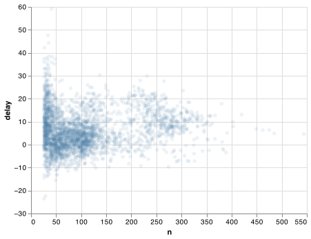
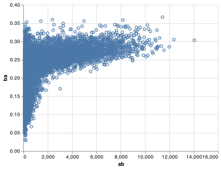

5 Data transformation
5.1 Introduction
Visualization is an important tool for insight generation, but it is rare that you get the data in exactly the right form you need. Often you’ll need to create some new variables or summaries, or maybe you just want to rename the variables or reorder the observations in order to make the data a little easier to work with. You’ll learn how to do all that (and more!) in this chapter, which will teach you how to transform your data using the pandas package and a new dataset on flights departing New York City in 2013.
5.1.1 Prerequisites
In this chapter we’re going to focus on how to use the pandas package, the foundational package for data science in Python. We’ll illustrate the key ideas using data from the nycflights13 R package, and use Altair to help us understand the data. We will also need two additional Python packages to help us with mathematical and statistical functions - NumPy and SciPy. Notice the from ____ import ____ follows the SciPy guidance to import functions from submodule spaces. Now we will call functions using the SciPy package with the stats.<FUNCTION> structure.
import pandas as pd
import altair as alt
import numpy as np
from scipy import stats
flights_url = "https://github.com/byuidatascience/data4python4ds/raw/master/data-raw/flights/flights.csv"
flights = pd.read_csv(flights_url)
flights['time_hour'] = pd.to_datetime(flights.time_hour, format = "%Y-%m-%d %H:%M:%S")5.1.2 nycflights13
To explore the basic data manipulation verbs of pandas, we’ll use flights. This data frame contains all 336,776 flights that departed from New York City in 2013. The data comes from the US Bureau of Transportation Statistics, and is documented here.
#> year month day ... hour minute time_hour
#> 0 2013 1 1 ... 5 15 2013-01-01 10:00:00+00:00
#> 1 2013 1 1 ... 5 29 2013-01-01 10:00:00+00:00
#> 2 2013 1 1 ... 5 40 2013-01-01 10:00:00+00:00
#> 3 2013 1 1 ... 5 45 2013-01-01 10:00:00+00:00
#> 4 2013 1 1 ... 6 0 2013-01-01 11:00:00+00:00
#> ... ... ... ... ... ... ... ...
#> 336771 2013 9 30 ... 14 55 2013-09-30 18:00:00+00:00
#> 336772 2013 9 30 ... 22 0 2013-10-01 02:00:00+00:00
#> 336773 2013 9 30 ... 12 10 2013-09-30 16:00:00+00:00
#> 336774 2013 9 30 ... 11 59 2013-09-30 15:00:00+00:00
#> 336775 2013 9 30 ... 8 40 2013-09-30 12:00:00+00:00
#>
#> [336776 rows x 19 columns]You might notice that this data frame does not print in its entirety as other data frames you might have seen in the past: it only shows the first few and last few rows with only the columns that fit on one screen. (To see the whole dataset, you can open the variable view in your interactive Python window and double click on the flights object which will open the dataset in the VS Code data viewer).
Using flights.dtypes will show you the variables types for each column. These describe the type of each variable:
#> year int64
#> month int64
#> day int64
#> dep_time float64
#> sched_dep_time int64
#> dep_delay float64
#> arr_time float64
#> sched_arr_time int64
#> arr_delay float64
#> carrier object
#> flight int64
#> tailnum object
#> origin object
#> dest object
#> air_time float64
#> distance int64
#> hour int64
#> minute int64
#> time_hour datetime64[ns, UTC]
#> dtype: objectint64stands for integers.float64stands for doubles, or real numbers.objectstands for character vectors, or strings.datetime64stands for date-times (a date + a time) and dates. You can read more about pandas datetime tools
There are three other common types of variables that aren’t used in this dataset but you’ll encounter later in the book:
boolstands for logical, vectors that contain onlyTrueorFalse.categorystands for factors, which pandas uses to represent categorical variables with fixed possible values.
Using flights.info() also provides a print out of data types on other useful information about your pandas data frame.
flights.info()
#> <class 'pandas.core.frame.DataFrame'>
#> RangeIndex: 336776 entries, 0 to 336775
#> Data columns (total 19 columns):
#> # Column Non-Null Count Dtype
#> --- ------ -------------- -----
#> 0 year 336776 non-null int64
#> 1 month 336776 non-null int64
#> 2 day 336776 non-null int64
#> 3 dep_time 328521 non-null float64
#> 4 sched_dep_time 336776 non-null int64
#> 5 dep_delay 328521 non-null float64
#> 6 arr_time 328063 non-null float64
#> 7 sched_arr_time 336776 non-null int64
#> 8 arr_delay 327346 non-null float64
#> 9 carrier 336776 non-null object
#> 10 flight 336776 non-null int64
#> 11 tailnum 334264 non-null object
#> 12 origin 336776 non-null object
#> 13 dest 336776 non-null object
#> 14 air_time 327346 non-null float64
#> 15 distance 336776 non-null int64
#> 16 hour 336776 non-null int64
#> 17 minute 336776 non-null int64
#> 18 time_hour 336776 non-null datetime64[ns, UTC]
#> dtypes: datetime64[ns, UTC](1), float64(5), int64(9), object(4)
#> memory usage: 48.8+ MB5.1.3 pandas data manipulation basics
In this chapter you are going to learn five key pandas functions or object methods. Object methods are things the objects can perform. For example, pandas data frames know how to tell you their shape, the pandas object knows how to concatenate two data frames together. The way we tell an object we want it to do something is with the ‘dot operator’. We will refer to these object operators as functions or methods. Below are the five methods that allow you to solve the vast majority of your data manipulation challenges:
- Pick observations by their values (
query()). - Reorder the rows (
sort()). - Pick variables by their names (
select()). - Create new variables with functions of existing variables (
assign()). - Collapse many values down to a single summary (
groupby()).
The pandas package can handle all of the same functionality of dplyr in R. You can read pandas mapping guide and this towards data science article to get more details on the following brief table.
| R dplyr function | Python pandas function |
|---|---|
filter() |
query() |
arrange() |
sort_values() |
select() |
filter() or loc[] |
rename () |
rename() |
mutate() |
assign() (see note) |
group_by () |
groupby() |
summarise() |
agg() |
Note: The dpylr::mutate() function works similar to assign() in pandas on data frames. But you cannot use assign() on grouped data frame in pandas like you would use dplyr::mutate() on a grouped object. In that case you would use transform() and even then the functionality is not quite the same.
The groupby() changes the scope of each function from operating on the entire dataset to operating on it group-by-group. These functions provide the verbs for a language of data manipulation.
All verbs work similarly:
The first argument is a pandas dataFrame.
The subsequent methods describe what to do with the data frame.
The result is a new data frame.
Together these properties make it easy to chain together multiple simple steps to achieve a complex result. Let’s dive in and see how these verbs work.
5.2 Filter rows with query()
query() allows you to subset observations based on their values. The first argument specifies the rows to be selected. This argument can be label names or a boolean series. The second argument specifies the columns to be selected. The bolean filter on the rows is our focus. For example, we can select all flights on January 1st with:
flights.query('month == 1 & day == 1')
#> year month day ... hour minute time_hour
#> 0 2013 1 1 ... 5 15 2013-01-01 10:00:00+00:00
#> 1 2013 1 1 ... 5 29 2013-01-01 10:00:00+00:00
#> 2 2013 1 1 ... 5 40 2013-01-01 10:00:00+00:00
#> 3 2013 1 1 ... 5 45 2013-01-01 10:00:00+00:00
#> 4 2013 1 1 ... 6 0 2013-01-01 11:00:00+00:00
#> .. ... ... ... ... ... ... ...
#> 837 2013 1 1 ... 23 59 2013-01-02 04:00:00+00:00
#> 838 2013 1 1 ... 16 30 2013-01-01 21:00:00+00:00
#> 839 2013 1 1 ... 19 35 2013-01-02 00:00:00+00:00
#> 840 2013 1 1 ... 15 0 2013-01-01 20:00:00+00:00
#> 841 2013 1 1 ... 6 0 2013-01-01 11:00:00+00:00
#>
#> [842 rows x 19 columns]The previous expression is equivalent to flights[(flights.month == 1) & (flights.day == 1)]
When you run that line of code, pandas executes the filtering operation and returns a new data frame. pandas functions usually don’t modify their inputs, so if you want to save the result, you’ll need to use the assignment operator, =:
jan1 = flights.query('month == 1 & day == 1')Interactive Python either prints out the results, or saves them to a variable.
5.2.1 Comparisons
To use filtering effectively, you have to know how to select the observations that you want using the comparison operators. Python provides the standard suite: >, >=, <, <=, != (not equal), and == (equal).
When you’re starting out with Python, the easiest mistake to make is to use = instead of == when testing for equality. When this happens you’ll get an error:
flights.query('month = 1')
#> Error in py_call_impl(callable, dots$args, dots$keywords): ValueError: cannot assign without a target object
#>
#> Detailed traceback:
#> File "<string>", line 1, in <module>
#> File "/usr/local/lib/python3.7/site-packages/pandas/core/frame.py", line 3231, in query
#> res = self.eval(expr, **kwargs)
#> File "/usr/local/lib/python3.7/site-packages/pandas/core/frame.py", line 3346, in eval
#> return _eval(expr, inplace=inplace, **kwargs)
#> File "/usr/local/lib/python3.7/site-packages/pandas/core/computation/eval.py", line 332, in eval
#> parsed_expr = Expr(expr, engine=engine, parser=parser, env=env)
#> File "/usr/local/lib/python3.7/site-packages/pandas/core/computation/expr.py", line 764, in __init__
#> self.terms = self.parse()
#> File "/usr/local/lib/python3.7/site-packages/pandas/core/computation/expr.py", line 781, in parse
#> return self._visitor.visit(self.expr)
#> File "/usr/local/lib/python3.7/site-packages/pandas/core/computation/expr.py", line 375, in visit
#> return visitor(node, **kwargs)
#> File "/usr/local/lib/python3.7/site-packages/pandas/core/computation/expr.py", line 381, in visit_Module
#> return self.visit(expr, **kwargs)
#> File "/usr/local/lib/python3.7/site-packages/pandas/core/computation/expr.py", line 375, in visit
#> return visitor(node, **kwargs)
#> File "/usr/local/lib/python3.7/site-packages/pandas/core/computation/expr.py", line 585, in visit_Assign
#> raise ValueError("cannot assign without a target object")There’s another common problem you might encounter when using ==: floating point numbers. The following result might surprise you!
Computers use finite precision arithmetic (they obviously can’t store an infinite number of digits!) so remember that every number you see is an approximation. Instead of relying on ==, use np.isclose():
5.2.2 Logical operators
Multiple arguments to query() are combined with “and”: every expression must be true in order for a row to be included in the output. For other types of combinations, you’ll need to use Boolean operators yourself: & is “and”, | is “or”, and ! is “not”. Figure 5.1 shows the complete set of Boolean operations.

Figure 5.1: Complete set of boolean operations. x is the left-hand circle, y is the right-hand circle, and the shaded region show which parts each operator selects.
The following code finds all flights that departed in November or December:
The order of operations doesn’t work like English. You can’t write filter(flights, month == (11 | 12)), which you might literally translate into “finds all flights that departed in November or December”. Instead it finds all months that equal 11 | 12, an expression that evaluates to True. In a numeric context (like here), True becomes one, so this finds all flights in January, not November or December. This is quite confusing!
A useful short-hand for this problem is x in y. This will select every row where x is one of the values in y. We could use it to rewrite the code above:
Sometimes you can simplify complicated subsetting by remembering De Morgan’s law: !(x & y) is the same as !x | !y, and !(x | y) is the same as !x & !y. For example, if you wanted to find flights that weren’t delayed (on arrival or departure) by more than two hours, you could use either of the following two filters:
flights.query('arr_delay > 120 | dep_delay > 120')
flights.query('arr_delay <= 120 | dep_delay <= 120')Whenever you start using complicated, multipart expressions in query(), consider making them explicit variables instead. That makes it much easier to check your work. You’ll learn how to create new variables shortly.
5.2.3 Missing values
One important feature of pandas in Python that can make comparison tricky are missing values, or NAs (“not availables”). NA represents an unknown value so missing values are “contagious”: almost any operation involving an unknown value will also be unknown.
The most confusing result are the comparisons. They always return a False. The logic for this result is explained on stackoverflow. The pandas missing data guide is a helpful read.
It’s easiest to understand why this is true with a bit more context:
# Let x be Mary's age. We don't know how old she is.
x = np.nan
# Let y be John's age. We don't know how old he is.
y = np.nan
# Are John and Mary the same age?
x == y
# Illogical comparisons are False.
#> FalseThe Python development team did decide to provide functionality to find np.nan objects in your code by allowing np.nan != np.nan to return True. Once again you can read the rationale for this decision. Python now has isnan() functions to make this comparison more straight forward in your code.
Pandas uses the nan structure in Python to identify NA or ‘missing’ values. If you want to determine if a value is missing, use pd.isna():
query() only includes rows where the condition is TRUE; it excludes both FALSE and NA values.
If you want to preserve missing values, ask for them explicitly using the trick mentioned in the previous paragraph or by using pd.isna() with the symbolic reference @ in your condition:
5.2.4 Exercises
Find all flights that
- Had an arrival delay of two or more hours
- Flew to Houston (
IAHorHOU) - Were operated by United, American, or Delta
- Departed in summer (July, August, and September)
- Arrived more than two hours late, but didn’t leave late
- Were delayed by at least an hour, but made up over 30 minutes in flight
- Departed between midnight and 6am (inclusive)
How many flights have a missing
dep_time? What other variables are missing? What might these rows represent?
5.3 Arrange or sort rows with sort_values()
sort() works similarly to query() except that instead of selecting rows, it changes their order. It takes a data frame and a column name or a list of column names to order by. If you provide more than one column name, each additional column will be used to break ties in the values of preceding columns:
flights.sort_values(by = ['year', 'month', 'day'])
#> year month day ... hour minute time_hour
#> 0 2013 1 1 ... 5 15 2013-01-01 10:00:00+00:00
#> 1 2013 1 1 ... 5 29 2013-01-01 10:00:00+00:00
#> 2 2013 1 1 ... 5 40 2013-01-01 10:00:00+00:00
#> 3 2013 1 1 ... 5 45 2013-01-01 10:00:00+00:00
#> 4 2013 1 1 ... 6 0 2013-01-01 11:00:00+00:00
#> ... ... ... ... ... ... ... ...
#> 111291 2013 12 31 ... 7 5 2013-12-31 12:00:00+00:00
#> 111292 2013 12 31 ... 8 25 2013-12-31 13:00:00+00:00
#> 111293 2013 12 31 ... 16 15 2013-12-31 21:00:00+00:00
#> 111294 2013 12 31 ... 6 0 2013-12-31 11:00:00+00:00
#> 111295 2013 12 31 ... 8 30 2013-12-31 13:00:00+00:00
#>
#> [336776 rows x 19 columns]Use the argument ascending = False to re-order by a column in descending order:
flights.sort_values(by = ['year', 'month', 'day'], ascending = False)
#> year month day ... hour minute time_hour
#> 110520 2013 12 31 ... 23 59 2014-01-01 04:00:00+00:00
#> 110521 2013 12 31 ... 23 59 2014-01-01 04:00:00+00:00
#> 110522 2013 12 31 ... 22 45 2014-01-01 03:00:00+00:00
#> 110523 2013 12 31 ... 5 0 2013-12-31 10:00:00+00:00
#> 110524 2013 12 31 ... 5 15 2013-12-31 10:00:00+00:00
#> ... ... ... ... ... ... ... ...
#> 837 2013 1 1 ... 23 59 2013-01-02 04:00:00+00:00
#> 838 2013 1 1 ... 16 30 2013-01-01 21:00:00+00:00
#> 839 2013 1 1 ... 19 35 2013-01-02 00:00:00+00:00
#> 840 2013 1 1 ... 15 0 2013-01-01 20:00:00+00:00
#> 841 2013 1 1 ... 6 0 2013-01-01 11:00:00+00:00
#>
#> [336776 rows x 19 columns]Missing values are always sorted at the end:
df = pd.DataFrame({'x': [5, 2, np.nan]})
df.sort_values('x')
#> x
#> 1 2.0
#> 0 5.0
#> 2 NaN
df.sort_values('x', ascending = False)
#> x
#> 0 5.0
#> 1 2.0
#> 2 NaN5.3.1 Exercises
How could you use
sort()to sort all missing values to the start? (Hint: useisna()).Sort
flightsto find the most delayed flights. Find the flights that left earliest.Sort
flightsto find the fastest (highest speed) flights.Which flights travelled the farthest? Which travelled the shortest?
5.4 Select columns with filter() or loc[]
It’s not uncommon to get datasets with hundreds or even thousands of variables. In this case, the first challenge is often narrowing in on the variables you’re actually interested in. fliter() allows you to rapidly zoom in on a useful subset using operations based on the names of the variables.
filter() is not terribly useful with the flights data because we only have 19 variables, but you can still get the general idea:
# Select columns by name
flights.filter(['year', 'month', 'day'])
# Select all columns except year and day (inclusive)
#> year month day
#> 0 2013 1 1
#> 1 2013 1 1
#> 2 2013 1 1
#> 3 2013 1 1
#> 4 2013 1 1
#> ... ... ... ...
#> 336771 2013 9 30
#> 336772 2013 9 30
#> 336773 2013 9 30
#> 336774 2013 9 30
#> 336775 2013 9 30
#>
#> [336776 rows x 3 columns]
flights.drop(columns = ['year', 'day'])
#> month dep_time sched_dep_time ... hour minute time_hour
#> 0 1 517.0 515 ... 5 15 2013-01-01 10:00:00+00:00
#> 1 1 533.0 529 ... 5 29 2013-01-01 10:00:00+00:00
#> 2 1 542.0 540 ... 5 40 2013-01-01 10:00:00+00:00
#> 3 1 544.0 545 ... 5 45 2013-01-01 10:00:00+00:00
#> 4 1 554.0 600 ... 6 0 2013-01-01 11:00:00+00:00
#> ... ... ... ... ... ... ... ...
#> 336771 9 NaN 1455 ... 14 55 2013-09-30 18:00:00+00:00
#> 336772 9 NaN 2200 ... 22 0 2013-10-01 02:00:00+00:00
#> 336773 9 NaN 1210 ... 12 10 2013-09-30 16:00:00+00:00
#> 336774 9 NaN 1159 ... 11 59 2013-09-30 15:00:00+00:00
#> 336775 9 NaN 840 ... 8 40 2013-09-30 12:00:00+00:00
#>
#> [336776 rows x 17 columns]loc[] functions in a similar fashion.
# Select columns by name
flights.loc[:, ['year', 'month', 'day']]
# Select all columns between year and day (inclusive)
#> year month day
#> 0 2013 1 1
#> 1 2013 1 1
#> 2 2013 1 1
#> 3 2013 1 1
#> 4 2013 1 1
#> ... ... ... ...
#> 336771 2013 9 30
#> 336772 2013 9 30
#> 336773 2013 9 30
#> 336774 2013 9 30
#> 336775 2013 9 30
#>
#> [336776 rows x 3 columns]
flights.loc[:, 'year':'day']
# Select all columns except year and day (inclusive)
#> year month day
#> 0 2013 1 1
#> 1 2013 1 1
#> 2 2013 1 1
#> 3 2013 1 1
#> 4 2013 1 1
#> ... ... ... ...
#> 336771 2013 9 30
#> 336772 2013 9 30
#> 336773 2013 9 30
#> 336774 2013 9 30
#> 336775 2013 9 30
#>
#> [336776 rows x 3 columns]There are a number of helper regular expressions you can use within filter():
flights.filter(regex = '^sch'): matches column names that begin with “sch”.flights.filter(regex = "time$"): matches names that end with “time”.flights.filter(regex = "_dep_"): matches names that contain “dep”.flights.filter(regex = '(.)\\1'): selects variables that match a regular expression. This one matches any variables that contain repeated characters. You’ll learn more about regular expressions in strings.
See pandas filter documentation for more details.
Use rename() to rename a column or multiple columns.
flights.rename(columns = {'year': 'YEAR', 'month':'MONTH'})
#> YEAR MONTH day ... hour minute time_hour
#> 0 2013 1 1 ... 5 15 2013-01-01 10:00:00+00:00
#> 1 2013 1 1 ... 5 29 2013-01-01 10:00:00+00:00
#> 2 2013 1 1 ... 5 40 2013-01-01 10:00:00+00:00
#> 3 2013 1 1 ... 5 45 2013-01-01 10:00:00+00:00
#> 4 2013 1 1 ... 6 0 2013-01-01 11:00:00+00:00
#> ... ... ... ... ... ... ... ...
#> 336771 2013 9 30 ... 14 55 2013-09-30 18:00:00+00:00
#> 336772 2013 9 30 ... 22 0 2013-10-01 02:00:00+00:00
#> 336773 2013 9 30 ... 12 10 2013-09-30 16:00:00+00:00
#> 336774 2013 9 30 ... 11 59 2013-09-30 15:00:00+00:00
#> 336775 2013 9 30 ... 8 40 2013-09-30 12:00:00+00:00
#>
#> [336776 rows x 19 columns]5.4.1 Exercises
Brainstorm as many ways as possible to select
dep_time,dep_delay,arr_time, andarr_delayfromflights.What happens if you include the name of a variable multiple times in a
filter()call?Does the result of running the following code surprise you? How do the select helpers deal with case by default? How can you change that default?
5.5 Add new variables with assign()
Besides selecting sets of existing columns, it’s often useful to add new columns that are functions of existing columns. That’s the job of assign().
assign() always adds new columns at the end of your dataset so we’ll start by creating a narrower dataset so we can see the new variables.
flights_sml = (flights.
filter(regex = "^year$|^month$|^day$|delay$|^distance$|^air_time$")
)
flights_sml.assign(
gain = lambda x: x.dep_delay - x.arr_delay,
speed = lambda x: x.distance / x.air_time * 60
).head()
#> year month day dep_delay arr_delay air_time distance gain speed
#> 0 2013 1 1 2.0 11.0 227.0 1400 -9.0 370.044053
#> 1 2013 1 1 4.0 20.0 227.0 1416 -16.0 374.273128
#> 2 2013 1 1 2.0 33.0 160.0 1089 -31.0 408.375000
#> 3 2013 1 1 -1.0 -18.0 183.0 1576 17.0 516.721311
#> 4 2013 1 1 -6.0 -25.0 116.0 762 19.0 394.137931Note that you can refer to columns that you’ve just created:
flights_sml.assign(
gain = lambda x: x.dep_delay - x.arr_delay,
hours = lambda x: x.air_time / 60,
gain_per_hour = lambda x: x.gain / x.hours
).head()
#> year month day dep_delay ... distance gain hours gain_per_hour
#> 0 2013 1 1 2.0 ... 1400 -9.0 3.783333 -2.378855
#> 1 2013 1 1 4.0 ... 1416 -16.0 3.783333 -4.229075
#> 2 2013 1 1 2.0 ... 1089 -31.0 2.666667 -11.625000
#> 3 2013 1 1 -1.0 ... 1576 17.0 3.050000 5.573770
#> 4 2013 1 1 -6.0 ... 762 19.0 1.933333 9.827586
#>
#> [5 rows x 10 columns]5.5.1 Useful creation functions
There are many functions for creating new variables that you can use with assign(). The key property is that the function must be vectorised: it must take a vector of values as input, return a vector with the same number of values as output. Some arithmetic operators are available in Python without the need for any additional packages. However, many arithmetic functions like mean() and std() are accessed through importing additional packages. Python comes with a math and statistics package. However, we recommend the NumPy package for accessing the suite of mathematical functions needed. You would import NumPy with import numpy as np. There’s no way to list every possible function that you might use, but here’s a selection of functions that are frequently useful:
Arithmetic operators:
+,-,*,/,^. These are all vectorised, using the so called “recycling rules”. If one parameter is shorter than the other, it will be automatically extended to be the same length. This is most useful when one of the arguments is a single number:air_time / 60,hours * 60 + minute, etc.Arithmetic operators are also useful in conjunction with the aggregate functions you’ll learn about later. For example,
x / np.sum(x)calculates the proportion of a total, andy - np.mean(y)computes the difference from the mean.Modular arithmetic:
//(integer division) and%(remainder), wherex == y * (x // y) + (x % y). Modular arithmetic is a handy tool because it allows you to break integers up into pieces. For example, in the flights dataset, you can computehourandminutefromdep_timewith:(flights. filter(['dep_time']). assign( hour = lambda x: x.dep_time // 100, minute = lambda x: x.dep_time % 100) ) #> dep_time hour minute #> 0 517.0 5.0 17.0 #> 1 533.0 5.0 33.0 #> 2 542.0 5.0 42.0 #> 3 544.0 5.0 44.0 #> 4 554.0 5.0 54.0 #> ... ... ... ... #> 336771 NaN NaN NaN #> 336772 NaN NaN NaN #> 336773 NaN NaN NaN #> 336774 NaN NaN NaN #> 336775 NaN NaN NaN #> #> [336776 rows x 3 columns]Logs:
np.log(),np.log2(),np.log10(). Logarithms are an incredibly useful transformation for dealing with data that ranges across multiple orders of magnitude. They also convert multiplicative relationships to additive, a feature we’ll come back to in modelling.All else being equal, I recommend using
np.log2()because it’s easy to interpret: a difference of 1 on the log scale corresponds to doubling on the original scale and a difference of -1 corresponds to halving.Offsets:
shift(1)andshift(-1)allow you to refer to leading or lagging values. This allows you to compute running differences (e.g.x - x.shift(1)) or find when values change (x != x.shift(1)). They are most useful in conjunction withgroupby(), which you’ll learn about shortly.Cumulative and rolling aggregates: pandas provides functions for running sums, products, mins and maxes:
cumsum(),cumprod(),cummin(),cummax(). If you need rolling aggregates (i.e. a sum computed over a rolling window), try therolling()in the pandas package.Logical comparisons,
<,<=,>,>=,!=, and==, which you learned about earlier. If you’re doing a complex sequence of logical operations it’s often a good idea to store the interim values in new variables so you can check that each step is working as expected.Ranking: there are a number of ranking functions, but you should start with
min_rank(). It does the most usual type of ranking (e.g. 1st, 2nd, 2nd, 4th). The default gives smallest values the small ranks; usedesc(x)to give the largest values the smallest ranks.y = pd.Series([1, 2, 2, np.nan, 3, 4]) y.rank(method = 'min') #> 0 1.0 #> 1 2.0 #> 2 2.0 #> 3 NaN #> 4 4.0 #> 5 5.0 #> dtype: float64 y.rank(ascending=False, method = 'min') #> 0 5.0 #> 1 3.0 #> 2 3.0 #> 3 NaN #> 4 2.0 #> 5 1.0 #> dtype: float64If
method = 'min'`` doesn't do what you need, look at the variantsmethod = ‘first’,method = ‘dense’,method = ‘percent’,pct = True`. See the rank help page for more details.
5.5.2 Exercises
Currently
dep_timeandsched_dep_timeare convenient to look at, but hard to compute with because they’re not really continuous numbers. Convert them to a more convenient representation of number of minutes since midnight.Compare
air_timewitharr_time - dep_time. What do you expect to see? What do you see? What do you need to do to fix it?Compare
dep_time,sched_dep_time, anddep_delay. How would you expect those three numbers to be related?Find the 10 most delayed flights using a ranking function. How do you want to handle ties? Carefully read the documentation for
method = 'min'.What trigonometric functions does NumPy provide?
5.6 Grouped summaries or aggregations with agg()
The last key verb is agg(). It collapses a data frame to a single row:
(Pandas aggregate functions ignores the np.nan values like na.rm = TRUE in R.)
agg() is not terribly useful unless we pair it with groupby(). This changes the unit of analysis from the complete dataset to individual groups. Then, when you use the pandas functions on a grouped data frame they’ll be automatically applied “by group”. For example, if we applied similiar code to a data frame grouped by date, we get the average delay per date. Note that with the groupby() function we used tuple to identify the column (first entry) and the function to apply on the column (second entry). This is called named aggregation in pandas:
by_day = flights.groupby(['year', 'month', 'day'])
by_day.agg(delay = ('dep_delay', np.mean)).reset_index()
#> year month day delay
#> 0 2013 1 1 11.548926
#> 1 2013 1 2 13.858824
#> 2 2013 1 3 10.987832
#> 3 2013 1 4 8.951595
#> 4 2013 1 5 5.732218
#> .. ... ... ... ...
#> 360 2013 12 27 10.937630
#> 361 2013 12 28 7.981550
#> 362 2013 12 29 22.309551
#> 363 2013 12 30 10.698113
#> 364 2013 12 31 6.996053
#>
#> [365 rows x 4 columns]Note the use of reset_index() to remove pandas creation of a MultiIndex. You can read more about the use of grouby in pandas with their Group By: split-apply-combine user Guid documentation
Together groupby() and agg() provide one of the tools that you’ll use most commonly when working with pandas: grouped summaries. But before we go any further with this, we need to introduce a structure for pandas code when doing data science work. We structure our code much like ‘the pipe’, %>% in the tidyverse packages from R-Studio.
5.6.1 Combining multiple operations
Imagine that we want to explore the relationship between the distance and average delay for each location. Using what you know about pandas, you might write code like this:
by_dest = flights.groupby('dest')
delay = by_dest.agg(
count = ('distance', 'size'),
dist = ('distance', np.mean),
delay = ('arr_delay', np.mean)
)
delay = delay.query('count > 20 & dest != "HNL"')
# It looks like delays increase with distance up to ~750 miles
# and then decrease. Maybe as flights get longer there's more
# ability to make up delays in the air?
chart_base = (alt.Chart(delay).
encode(
x = 'dist',
y = 'delay'
))
chart = chart_base.mark_point() + chart_base.transform_loess('dist', 'delay').mark_line() There are three steps to prepare this data:
Group flights by destination.
Summarise to compute distance, average delay, and number of flights.
Filter to remove noisy points and Honolulu airport, which is almost twice as far away as the next closest airport.
This code is a little frustrating to write because we have to give each intermediate data frame a name, even though we don’t care about it. Naming things is hard, so this slows down our analysis.
There’s another way to tackle the same problem without the additional objects:
delays = (flights.
groupby('dest').
agg(
count = ('distance', 'size'),
dist = ('distance', np.mean),
delay = ('arr_delay', np.mean)
).
query('count > 20 & dest != "HNL"'))This focuses on the transformations, not what’s being transformed, which makes the code easier to read. You can read it as a series of imperative statements: group, then summarise, then filter. As suggested by this reading, a good way to pronounce . when reading pandas code is “then”.
You can use the () with . to rewrite multiple operations in a way that you can read left-to-right, top-to-bottom. We’ll use this format frequently from now on because it considerably improves the readability of complex pandas code.
5.6.2 Missing values
You may have wondered about the np.nan values we put into our pandas data frame above. Pandas just started an experimental options (version 1.0) for pd.NA but it is not standard as in the R language. You can read the full details about missing data in pandas.
Pandas’ and NumPy’s handling of missing values defaults to the opposite functionality of R and the Tidyverse. Here are three key defaults when using Pandas.
When summing data, NA (missing) values will be treated as zero.
If the data are all NA, the result will be 0.
Cumulative methods ignore NA values by default, but preserve them in the resulting arrays. To override this behaviour and include missing values, use
skipna=False.All the
.groupby()methods exclude missing values in their calculations as described in the pandas groupby documentation.
In our case, where missing values represent cancelled flights, we could also tackle the problem by first removing the cancelled flights. We’ll save this dataset so we can reuse it in the next few examples.
5.6.3 Counts
Whenever you do any aggregation, it’s always a good idea to include either a count (size()), or a count of non-missing values (sum(!is.na(x))). That way you can check that you’re not drawing conclusions based on very small amounts of data. For example, let’s look at the planes (identified by their tail number) that have the highest average delays:
delays = not_cancelled.groupby('tailnum').agg(
delay = ("arr_delay", np.mean)
)
chart = (alt.Chart(delays).
transform_density(
density = 'delay',
as_ = ['delay', 'density'],
bandwidth=10
).
encode(
x = 'delay:Q',
y = 'density:Q'
).
mark_line()
)Wow, there are some planes that have an average delay of 5 hours (300 minutes)!
The story is actually a little more nuanced. We can get more insight if we draw a scatterplot of number of flights vs. average delay:
delays = not_cancelled.groupby('tailnum').agg(
delay = ("arr_delay", np.mean),
n = ('arr_delay', 'size')
)
chart = (alt.Chart(delays).
encode(
x = 'n',
y = 'delay'
).
mark_point(
filled = True,
opacity = 1/10)
)Not surprisingly, there is much greater variation in the average delay when there are few flights. The shape of this plot is very characteristic: whenever you plot a mean (or other summary) vs. group size, you’ll see that the variation decreases as the sample size increases.
When looking at this sort of plot, it’s often useful to filter out the groups with the smallest numbers of observations, so you can see more of the pattern and less of the extreme variation in the smallest groups. This is what the following code does, as well as showing you a handy pattern for simple data frame manipulations only needed for a chart.
chart = (alt.Chart(delays.query("n > 25")).
encode(
x = 'n',
y = 'delay'
).
mark_point(
filled = True,
opacity = 1/10)
)
chart.save("screenshots/altair_delays.png")
There’s another common variation of this type of pattern. Let’s look at how the average performance of batters in baseball is related to the number of times they’re at bat. Here I use data from the Lahman package to compute the batting average (number of hits / number of attempts) of every major league baseball player.
When I plot the skill of the batter (measured by the batting average, ba) against the number of opportunities to hit the ball (measured by at bat, ab), you see two patterns:
As above, the variation in our aggregate decreases as we get more data points.
There’s a positive correlation between skill (
ba) and opportunities to hit the ball (ab). This is because teams control who gets to play, and obviously they’ll pick their best players.
# settings for Altair to handle large data
alt.data_transformers.enable('json')
#> DataTransformerRegistry.enable('json')
batting_url = "https://github.com/byuidatascience/data4python4ds/raw/master/data-raw/batting/batting.csv"
batting = pd.read_csv(batting_url)
batters = (batting.
groupby('playerID').
agg(
ab = ("AB", "sum"),
h = ("H", "sum")
).
assign(
ba = lambda x: x.h/x.ab
)
)
chart = (alt.Chart(batters.query('ab > 100')).
encode(
x = 'ab',
y = 'ba'
).
mark_point()
)
chart.save("screenshots/altair_batters.png")
This also has important implications for ranking. If you naively sort on desc(ba), the people with the best batting averages are clearly lucky, not skilled:
batters.sort_values('ba', ascending = False).head(10)
#> ab h ba
#> playerID
#> egeco01 1 1 1.0
#> simspe01 1 1 1.0
#> paciojo01 3 3 1.0
#> bruneju01 1 1 1.0
#> liddeda01 1 1 1.0
#> garcimi02 1 1 1.0
#> meehabi01 1 1 1.0
#> rodried01 1 1 1.0
#> hopkimi01 2 2 1.0
#> gallaja01 1 1 1.0You can find a good explanation of this problem at http://varianceexplained.org/r/empirical_bayes_baseball/ and http://www.evanmiller.org/how-not-to-sort-by-average-rating.html.
5.6.4 Useful summary functions
Just using means, counts, and sum can get you a long way, but NumPy, SciPy, and Pandas provide many other useful summary functions (remember we are using the SciPy stats submodule):
Measures of location: we’ve used
np.mean(), butnp.median()is also useful. The mean is the sum divided by the length; the median is a value where 50% ofxis above it, and 50% is below it.It’s sometimes useful to combine aggregation with logical subsetting. We haven’t talked about this sort of subsetting yet, but you’ll learn more about it in subsetting.
(not_cancelled. groupby(['year', 'month', 'day']). agg( avg_delay1 = ('arr_delay', np.mean), avg_delay2 = ('arr_delay', lambda x: np.mean(x[x > 0])) ) ) #> avg_delay1 avg_delay2 #> year month day #> 2013 1 1 12.651023 32.481562 #> 2 12.692888 32.029907 #> 3 5.733333 27.660870 #> 4 -1.932819 28.309764 #> 5 -1.525802 22.558824 #> ... ... ... #> 12 27 -0.148803 29.046832 #> 28 -3.259533 25.607692 #> 29 18.763825 47.256356 #> 30 10.057712 31.243802 #> 31 6.212121 24.455959 #> #> [365 rows x 2 columns]Measures of spread:
np.sd(),stats.iqr(),stats.median_absolute_deviation(). The root mean squared deviation, or standard deviationnp.sd(), is the standard measure of spread. The interquartile rangestats.iqr()and median absolute deviationstats.median_absolute_deviation()are robust equivalents that may be more useful if you have outliers.# Why is distance to some destinations more variable than to others? (not_cancelled. groupby(['dest']). agg(distance_sd = ('distance', np.std)). sort_values('distance_sd', ascending = False) ) #> distance_sd #> dest #> EGE 10.542765 #> SAN 10.350094 #> SFO 10.216017 #> HNL 10.004197 #> SEA 9.977993 #> ... ... #> BZN 0.000000 #> BUR 0.000000 #> PSE 0.000000 #> ABQ 0.000000 #> LEX NaN #> #> [104 rows x 1 columns]Measures of rank:
np.min(),np.quantile(),np.max(). Quantiles are a generalisation of the median. For example,np.quantile(x, 0.25)will find a value ofxthat is greater than 25% of the values, and less than the remaining 75%.# When do the first and last flights leave each day? (not_cancelled. groupby(['year', 'month', 'day']). agg( first = ('dep_time', np.min), last = ('dep_time', np.max) ) ) #> first last #> year month day #> 2013 1 1 517.0 2356.0 #> 2 42.0 2354.0 #> 3 32.0 2349.0 #> 4 25.0 2358.0 #> 5 14.0 2357.0 #> ... ... ... #> 12 27 2.0 2351.0 #> 28 7.0 2358.0 #> 29 3.0 2400.0 #> 30 1.0 2356.0 #> 31 13.0 2356.0 #> #> [365 rows x 2 columns]Measures of position:
first(),nth(),last(). These work similarly tox[1],x[2], andx[size(x)]but let you set a default value if that position does not exist (i.e. you’re trying to get the 3rd element from a group that only has two elements). For example, we can find the first and last departure for each day:# using first and last (not_cancelled. groupby(['year', 'month','day']). agg( first_dep = ('dep_time', 'first'), last_dep = ('dep_time', 'last') ) ) #> first_dep last_dep #> year month day #> 2013 1 1 517.0 2356.0 #> 2 42.0 2354.0 #> 3 32.0 2349.0 #> 4 25.0 2358.0 #> 5 14.0 2357.0 #> ... ... ... #> 12 27 2.0 2351.0 #> 28 7.0 2358.0 #> 29 3.0 2400.0 #> 30 1.0 2356.0 #> 31 13.0 2356.0 #> #> [365 rows x 2 columns]# using position (not_cancelled. groupby(['year', 'month','day']). agg( first_dep = ('dep_time', lambda x: list(x)[1]), last_dep = ('dep_time', lambda x: list(x)[-1]) ) ) #> first_dep last_dep #> year month day #> 2013 1 1 533.0 2356.0 #> 2 126.0 2354.0 #> 3 50.0 2349.0 #> 4 106.0 2358.0 #> 5 37.0 2357.0 #> ... ... ... #> 12 27 8.0 2351.0 #> 28 56.0 2358.0 #> 29 39.0 2400.0 #> 30 23.0 2356.0 #> 31 18.0 2356.0 #> #> [365 rows x 2 columns]Counts: You’ve seen
size(), which takes no arguments, and returns the size of the current group. To count the number of non-missing values, useisnull().sum(). To count the number of unique (distinct) values, usenunique().# Which destinations have the most carriers? (flights. groupby('dest'). agg( carriers_unique = ('carrier', 'nunique'), carriers_count = ('carrier', 'size'), missing_time = ('dep_time', lambda x: x.isnull().sum()) ) ) #> carriers_unique carriers_count missing_time #> dest #> ABQ 1 254 0.0 #> ACK 1 265 0.0 #> ALB 1 439 20.0 #> ANC 1 8 0.0 #> ATL 7 17215 317.0 #> ... ... ... ... #> TPA 7 7466 59.0 #> TUL 1 315 16.0 #> TVC 2 101 5.0 #> TYS 2 631 52.0 #> XNA 2 1036 25.0 #> #> [105 rows x 3 columns]Counts are useful and pandas provides a simple helper if all you want is a count:
Counts and proportions of logical values:
sum(x > 10),mean(y == 0). When used with numeric functions,TRUEis converted to 1 andFALSEto 0. This makessum()andmean()very useful:sum(x)gives the number ofTRUEs inx, andmean(x)gives the proportion.# How many flights left before 5am? (these usually indicate delayed # flights from the previous day) (not_cancelled. groupby(['year', 'month','day']). agg( n_early = ('dep_time', lambda x: np.sum(x < 500)) ) ) # What proportion of flights are delayed by more than an hour? #> n_early #> year month day #> 2013 1 1 0.0 #> 2 3.0 #> 3 4.0 #> 4 3.0 #> 5 3.0 #> ... ... #> 12 27 7.0 #> 28 2.0 #> 29 3.0 #> 30 6.0 #> 31 4.0 #> #> [365 rows x 1 columns] (not_cancelled. groupby(['year', 'month','day']). agg( hour_prop = ('arr_delay', lambda x: np.sum(x > 60)) ) ) #> hour_prop #> year month day #> 2013 1 1 60.0 #> 2 79.0 #> 3 51.0 #> 4 36.0 #> 5 25.0 #> ... ... #> 12 27 51.0 #> 28 31.0 #> 29 129.0 #> 30 69.0 #> 31 33.0 #> #> [365 rows x 1 columns]
5.6.5 Grouping by multiple variables
Be careful when progressively rolling up summaries: it’s OK for sums and counts, but you need to think about weighting means and variances, and it’s not possible to do it exactly for rank-based statistics like the median. In other words, the sum of groupwise sums is the overall sum, but the median of groupwise medians is not the overall median.
5.6.6 Ungrouping (reseting the index)
If you need to remove grouping and MultiIndex use reset.index(). This is a rough equivalent to ungroup() in R but it is not the same thing. Notice the column names are no longer in multiple levels.
dat = (not_cancelled.
groupby(['year', 'month','day']).
agg(
hour_prop = ('arr_delay', lambda x: np.sum(x > 60))
)
)
dat.head()
#> hour_prop
#> year month day
#> 2013 1 1 60.0
#> 2 79.0
#> 3 51.0
#> 4 36.0
#> 5 25.0
dat.reset_index().head()
#> year month day hour_prop
#> 0 2013 1 1 60.0
#> 1 2013 1 2 79.0
#> 2 2013 1 3 51.0
#> 3 2013 1 4 36.0
#> 4 2013 1 5 25.05.6.7 Exercises
Brainstorm at least 5 different ways to assess the typical delay characteristics of a group of flights. Consider the following scenarios:
A flight is 15 minutes early 50% of the time, and 15 minutes late 50% of the time.
A flight is always 10 minutes late.
A flight is 30 minutes early 50% of the time, and 30 minutes late 50% of the time.
99% of the time a flight is on time. 1% of the time it’s 2 hours late.
Which is more important: arrival delay or departure delay?
Our definition of cancelled flights (
is.na(dep_delay) | is.na(arr_delay)) is slightly suboptimal. Why? Which is the most important column?Look at the number of cancelled flights per day. Is there a pattern? Is the proportion of cancelled flights related to the average delay?
Which carrier has the worst delays? Challenge: can you disentangle the effects of bad airports vs. bad carriers? Why/why not? (Hint: think about
flights.groupby(['carrier', 'dest']).agg(n = ('dep_time', 'size')))
5.7 Grouped transforms (and filters)
Grouping is most useful in conjunction with agg(), but you can also do convenient operations with transform(). This is a difference in pandas as compared to dplyr. Once you create a .groupby() object you cannot use assign() and the best equivalent is transform(). Following pandas groupby guide on ‘split-apply-combine’, we would assign our transfomred variables to our data frame and then perform filters on the full data frame.
Find the worst members of each group:
flights_sml['ranks'] = (flights_sml. groupby(['year', 'month','day']). arr_delay.rank(ascending = False)) #> /usr/local/bin/python3:3: SettingWithCopyWarning: #> A value is trying to be set on a copy of a slice from a DataFrame. #> Try using .loc[row_indexer,col_indexer] = value instead #> #> See the caveats in the documentation: https://pandas.pydata.org/pandas-docs/stable/user_guide/indexing.html#returning-a-view-versus-a-copy flights_sml.query('ranks < 10').drop(columns = 'ranks') #> year month day dep_delay arr_delay air_time distance #> 151 2013 1 1 853.0 851.0 41.0 184 #> 649 2013 1 1 290.0 338.0 213.0 1134 #> 673 2013 1 1 260.0 263.0 46.0 266 #> 729 2013 1 1 157.0 174.0 60.0 213 #> 746 2013 1 1 216.0 222.0 121.0 708 #> ... ... ... ... ... ... ... ... #> 336579 2013 9 30 158.0 121.0 95.0 765 #> 336668 2013 9 30 182.0 174.0 95.0 708 #> 336724 2013 9 30 158.0 136.0 91.0 746 #> 336757 2013 9 30 194.0 194.0 50.0 301 #> 336763 2013 9 30 154.0 130.0 123.0 944 #> #> [3306 rows x 7 columns]Find all groups bigger than a threshold:
popular_dests = flights popular_dests['n'] = popular_dests.groupby('dest').arr_delay.transform('size') popular_dests = flights.query('n > 365').drop(columns = 'n') popular_dests #> year month day ... hour minute time_hour #> 0 2013 1 1 ... 5 15 2013-01-01 10:00:00+00:00 #> 1 2013 1 1 ... 5 29 2013-01-01 10:00:00+00:00 #> 2 2013 1 1 ... 5 40 2013-01-01 10:00:00+00:00 #> 3 2013 1 1 ... 5 45 2013-01-01 10:00:00+00:00 #> 4 2013 1 1 ... 6 0 2013-01-01 11:00:00+00:00 #> ... ... ... ... ... ... ... ... #> 336771 2013 9 30 ... 14 55 2013-09-30 18:00:00+00:00 #> 336772 2013 9 30 ... 22 0 2013-10-01 02:00:00+00:00 #> 336773 2013 9 30 ... 12 10 2013-09-30 16:00:00+00:00 #> 336774 2013 9 30 ... 11 59 2013-09-30 15:00:00+00:00 #> 336775 2013 9 30 ... 8 40 2013-09-30 12:00:00+00:00 #> #> [332577 rows x 19 columns]Standardise to compute per group metrics:
(popular_dests. query('arr_delay > 0'). assign(prop_delay = lambda x: x.arr_delay / x.groupby('dest').arr_delay.transform('sum')). filter(['year', 'month', 'day', 'dest', 'arr_delay', 'prop_delay']) ) #> year month day dest arr_delay prop_delay #> 0 2013 1 1 IAH 11.0 0.000111 #> 1 2013 1 1 IAH 20.0 0.000201 #> 2 2013 1 1 MIA 33.0 0.000235 #> 5 2013 1 1 ORD 12.0 0.000042 #> 6 2013 1 1 FLL 19.0 0.000094 #> ... ... ... ... ... ... ... #> 336759 2013 9 30 BNA 7.0 0.000057 #> 336760 2013 9 30 STL 57.0 0.000717 #> 336762 2013 9 30 SFO 42.0 0.000204 #> 336763 2013 9 30 MCO 130.0 0.000631 #> 336768 2013 9 30 BOS 1.0 0.000005 #> #> [131106 rows x 6 columns]
5.7.1 Exercises
Which plane (
tailnum) has the worst on-time record?What time of day should you fly if you want to avoid delays as much as possible?
For each destination, compute the total minutes of delay. For each flight, compute the proportion of the total delay for its destination.
Delays are typically temporally correlated: even once the problem that caused the initial delay has been resolved, later flights are delayed to allow earlier flights to leave. Explore how the delay of a flight is related to the delay of the immediately preceding flight.
Look at each destination. Can you find flights that are suspiciously fast? (i.e. flights that represent a potential data entry error). Compute the air time of a flight relative to the shortest flight to that destination. Which flights were most delayed in the air?
Find all destinations that are flown by at least two carriers. Use that information to rank the carriers.
For each plane, count the number of flights before the first delay of greater than 1 hour.